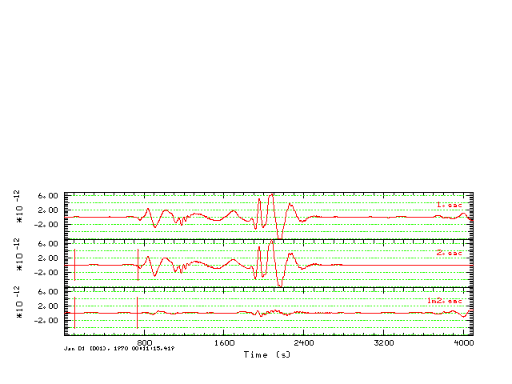
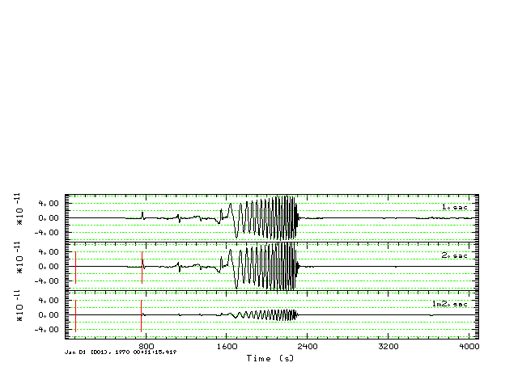

Introduction
This is a comparison between mineos
and earth-flattened wavenumber integration synthetics (Computer
Programs in Seismology - 3.30 ) for the AK-135f continental model.
I use the same model for both sets of synthetics, except that the
wavenumber integration model does not have an inner core [The reason
for this is that my formulation for wavenumber integration only permits
fluid layers at the top or at the bottom of the elastic stack.
Computations
The comparison is run in the directory MINEOS/share/mineos2. The
effort is computationally intensive in terms of computations and the
construction of graphics. The objective is to compare the two sets of
synthetics at arc distances of 30, 60 and 90 degrees for source depths
of 10, 100 and 700 km.
The following steps are performed:
1. Wavenumber integration synthetics:
cd AK135-Z
zDOIT
After 10 hours of computation, the result will be a directory listing:
00README 1000/
date.end
MKW* zDOIT*
0100/ 7000/ date.start tak135sph.mod
The directory 0100 has the Green's functions for the source depth of
10.0 km, 1000 for a source depth of 100.0 km, and 7000 for a source
depth of 700.0 km.
Within each directory are 10 Green's functions for each distance. For
example, in the 1000 directory you will find
0333581000.RDD
0333581000.ZDS 0667171000.TDS 1000751000.RDS
1000751000.ZEX
0333581000.RDS 0333581000.ZEX 0667171000.TSS
1000751000.REX 1000751000.ZSS
0333581000.REX 0333581000.ZSS 0667171000.ZDD
1000751000.RSS W.CTL
0333581000.RSS 0667171000.RDD 0667171000.ZDS
1000751000.TDS
0333581000.TDS 0667171000.RDS 0667171000.ZEX
1000751000.TSS
0333581000.TSS 0667171000.REX 0667171000.ZSS
1000751000.ZDD
0333581000.ZDD 0667171000.RSS 1000751000.RDD
1000751000.ZDS
The naming convention is distance_depth.green.
These synthetics have a sample rate of 2.0 sec, have a zero-phase
triangular source pulse of length 8 seconds. This source pulse
has a spectral zero at the Nyquist frequency and a corresponding
spectral shaping for frequencies greater than 1/2 the Nyquist
frequency. The synthetics are those of ground velocicy in units
of cm/sec.
2. Normal mode synthetics:
cd nDEMO6
DOIT
This runs the script DOEGN which computes the free
oscillation frequencies and eigenfunctions for the spehroidal and
toroidal modes. The script is set to compute up to frequencies of
0.2 Hz (e.g., 200 mHz). This computation will require several
days.
After running DOEGN, SAC files are generated for the following cases:
#####
# now compute the synthetics for a specific moment tensor that represents
# the following cases
#
# Source STK DIP RAKE Mw [M0(dyne-cm)] Src-Rec Az
# DS 45 90 90 2.6 [1.0E+20] 0
# SS 22.5 90 0 2.6 [1.0E+20] 0
# DD 45 45 90 2.6 [1.0E+20] 0
# EX Center of expansion 2.6 [1.0E+20] 0
#####
The SAC files are in the directories
with names GRN_Syndat_DEP, where GRN is one of DS, SS, DD or EX and DEP
is on of 010 (10 km), 100 (100 km) or 700 (700km). The contents
of these directories with files with names such as "Syndat.1969365: 0:
0:-4.170.LHZ.SAC". A zero phase source time function of a triangle with
length 8 seconds is applied. The SAC files are gound acceleration
with units of nm/s/s.
When the evaluation is complete, run the script DOCLEAN to return the
directory to the original distribution.
3. Populate the wavenumber integration
synthetics
At this point, both sets of synthetics
have the same sample interval and the same source time function.
In the directory MINEOS/share/mineos2 we will create
subdirectories with names TEST.DEP.DEG where DEP is 010, 100 or 700 and
DEG is 30, 50 or 90. The reason for this organization is that I wish to
compare the two types of synthetics at the same depth and distance.
DOPOPULATERBH
This creates the dirrectories, within which there is a new directory
called NEW_-Z with the CPS Green's functions. For example the command
rbh> ls -R TEST.010.030
TEST.010.030:
NEW_-Z/
TEST.010.030/NEW_-Z:
0333580100.RDD 0333580100.REX 0333580100.TDS
0333580100.ZDD 0333580100.ZEX
0333580100.RDS 0333580100.RSS 0333580100.TSS
0333580100.ZDS 0333580100.ZSS
4. Apply the source mechanism to the
wavenumber integration synthetics
DOPOPULATEMCH
This systematically creates the synthetics for the specific
mechanism.
It uses the program wvfmch96 to
compute the predicted synthetics on the basis of the observed. In this
case the observed are just the Z, R and T components of the SS Green's
functions, relying on the fact that the SAC header variable AZ is set
to 0.0 for the Green's functions. The program wvfmch96 converts the Green's
functions units to m/sec for
the given moment of 1.0E+20 dyne-cm.
The result is
rbh> ls -R TEST.010.030TEST.010.030:
DD.WK/ DS.WK/ NEW_-Z/ SS.WK/
TEST.010.030/DD.WK:
D.-Z.LHR D.-Z.LHT D.-Z.LHZ
TEST.010.030/DS.WK:
D.-Z.LHR D.-Z.LHT D.-Z.LHZ
TEST.010.030/NEW_-Z:
0333580100.RDD 0333580100.REX 0333580100.TDS
0333580100.ZDD 0333580100.ZEX
0333580100.RDS 0333580100.RSS 0333580100.TSS
0333580100.ZDS 0333580100.ZSS
TEST.010.030/SS.WK:
D.-Z.LHR D.-Z.LHT D.-Z.LHZ
Here the SS.WK are the wavenumber integration synthetics in units of m/s
5. Populate the free oscillation
synthetics
DOPOPULATEMIN
This script reads the selected synthetics, removes a linear trend,
integrates and divides by 1.0E+09 to convert the synthetics in ground
velocity in units of m/s. The
result is
rbh> ls -R TEST.010.030
6. Compare the synthetics
DOALLHTML
This script searches through all distances and depths to run DOCMP
which creates the .gif images for the documentation.
There are several aspects here. First the wavenumber integration
synthetics had a zero-phase source pulse with a duration of 4 seconds,
while the free-oscillation synthetics had a zero phase source pulse
with duration of 8.0 sec.
Comparisons
Timing
The first test compares the synthetized ground velocities for a source
depth of 10 km and a distance of 90 degrees. The focus here is on
the amplitudes and the timing, especially that of the surface wave
arrival. For the distance the waveforms are bandpass filtered
using the command
transfer from none to none freqlimits 0.001 0.002 0.06 0.10
The figures compare the complete seismograms, e.g., a window of 700 to
3400 seconds after origin time, a focus on the surface-wave train using
a window of 2200 to 3400 seconds after the origin time, and a zomm on
the short period surface wave using a window 2800 to 3000 seconds after
the origin time. The mineos synthetics
are in red and the CPS synthetics
are in blue.
|
|
|
Comparison of mineos (red) and Earth
flattened(blue) synthetics for the Z component at 90 degrees. The
vertical red lines indicate the model predicted P- and S-times.
|
Comparison of mineos (red) and
Earth flattened(blue) synthetics for the R component at 90 degrees. The
vertical red lines indicate the model predicted P- and S-times. |
Comparison of mineos (red) and
Earth flattened(blue) synthetics for the T component at 90 degrees. The
vertical red lines indicate the model predicted P- and S-times. |

|
|
|
Comparison of mineos (red) and Earth
flattened(blue) synthetics for the Z component at 90 degrees.
This plot shows the arrivals in the travel time window of 2200 to 3400
seconds.
|
Comparison of mineos (red) and
Earth flattened(blue) synthetics for the R component at 90 degrees.
This plot shows the arrivals in the travel time window of 2200 to 3400
seconds.. |
Comparison of mineos (red) and
Earth flattened(blue) synthetics for the T component at 90 degrees.
This plot shows the arrivals in the travel time window of 2200 to 3400
seconds.. |
|
|
|
Comparison of mineos (red) and Earth
flattened(blue) synthetics for the Z component at 90 degrees.
This plot shows the arrivals in the travel time window of 2800 to 3000
seconds. This indicates a 3 second travel time difference at a 20
second period.
|
Comparison of mineos (red) and
Earth flattened(blue) synthetics for the R component at 90 degrees.
This plot shows the arrivals in the travel time window of 2800 to 3000
seconds. this indicates a 3 second travel time difference.
|
Comparison of mineos (red) and
Earth flattened(blue) synthetics for the T component at 90 degrees.
This plot shows the arrivals in the travel time window of 2800 to 3000
seconds. This indicates a 1 second travel time difference at a 20
second period.
|
Strike-Slip synthetics as a function of depth
I created synthetics for strike-slip (SS), vertical dip-slip (DS)
and 45 degree dip-slip (DD) mechanisms and compare the Z R and T
components.
Ground displacements are compared, which are filtered using the gsac
command. This also serves as an independent test of the moment tensor
formulation using in Computer Programs in Seismology.
transfer from none to none freqlimits 0.002 0.003 0.025 0.030
which accounts for the fact that the minos synthetics only include
frequencies as high as 0.10 HZ, whereas the wavenumber integration
synthetics go up to 0.25 Hz. The use of the gsac transfer function is a
simple way to accomplish a zero phase filter. This also eliminates much
of the 0.03 rippling in the free-oscillation synthetics.
isotropic source for completeness)
To permit the comparison I had to account for the fact that my
wavenumber integrations synthetics had a zero-phase source pulse,
whereas the mineos used a causal triangular pulse implemented in the
frequency domain,
I also had to account for the fact that mineos accepts geodetic
coordinates and then converts internally to geocentric. I had to
slightly change my input to mineos so that the epicentral distance in
kilometers agreed with that used for the wavenumber integration.
For each mechanism, source depth and arc distance, there are
separate figures for the Z, R and T components.
The traces shown are in two groups:
Top panel:
- Top: mineos synthetic - all times are
absolute travel time (note that the zero phase filter used above
eliminates causality.
- Middle: wavenumber integration synthetic
- Bottom: result of subtracting wavenumber integration
synthetic from mineos synthetic
Bottom panel (in red): Same as top but filtered with lp c 0.005 n 2
and
hp c 0.002 n 2
to test ability to
model mantle waves.
Conclusion: The comparison is good. The difference shows the
effect of a slight time shift. If a partitioned inversion is
used, e.g., inverting for P, SV/SH and mantloe waves in separate
time windows with a permissible time shift, then THESE SYNTHETICS ARE
THE ONES TO USE.
Finally, the predicted travel times agree with the AK-135 values from
Tom Owens p-tau program
| HS |
GCARC |
MECH |
TauP (ak135) |
Z
|
R
|
T
|
| 010 |
030 |
SS |
Model: ak135
Distance Depth Phase Travel Ray Param Purist Purist
(deg) (km) Name Time (s) p (s/deg) Distance Name
----------------------------------------------------------------
30.00 10.0 P 368.73 8.843 30.00 = P
30.00 10.0 pP 371.79 8.844 30.00 = pP
30.00 10.0 sP 373.04 8.844 30.00 = sP
30.00 10.0 PP 425.24 13.626 30.00 = PP
30.00 10.0 PP 425.27 13.186 30.00 = PP
30.00 10.0 PP 425.61 13.508 30.00 = PP
30.00 10.0 PPP 433.48 13.700 30.00 = PPP
30.00 10.0 PP 436.40 11.109 30.00 = PP
30.00 10.0 PP 436.54 11.230 30.00 = PP
30.00 10.0 PcP 550.86 2.585 30.00 = PcP
30.00 10.0 pPcP 554.28 2.583 30.00 = pPcP
30.00 10.0 S 666.60 15.690 30.00 = S
30.00 10.0 pS 670.11 15.697 30.00 = pS
30.00 10.0 sS 671.64 15.694 30.00 = sS
30.00 10.0 SS 758.27 24.349 30.00 = SS
30.00 10.0 sSS 762.04 24.354 30.00 = sSS
30.00 10.0 SSS 771.54 24.544 30.00 = SSS
30.00 10.0 ScP 773.05 3.243 30.00 = ScP
30.00 10.0 PcS 774.22 3.243 30.00 = PcS
30.00 10.0 pPcS 777.62 3.241 30.00 = pPcS
30.00 10.0 SS 794.15 20.474 30.00 = SS
30.00 10.0 SS 794.29 20.651 30.00 = SS
30.00 10.0 sSS 798.60 20.475 30.00 = sSS
30.00 10.0 sSS 798.71 20.635 30.00 = sSS
30.00 10.0 ScS 1008.41 4.778 30.00 = ScS
|
|
|

|
| 010 |
060 |
SS |
Model: ak135
Distance Depth Phase Travel Ray Param Purist Purist
(deg) (km) Name Time (s) p (s/deg) Distance Name
----------------------------------------------------------------
60.00 10.0 P 606.70 6.866 60.00 = P
60.00 10.0 pP 609.92 6.872 60.00 = pP
60.00 10.0 sP 611.13 6.870 60.00 = sP
60.00 10.0 PcP 652.77 4.000 60.00 = PcP
60.00 10.0 pPcP 656.14 3.999 60.00 = pPcP
60.00 10.0 PP 738.99 8.843 60.00 = PP
60.00 10.0 PPP 820.84 10.896 60.00 = PPP
60.00 10.0 PPP 825.91 11.848 60.00 = PPP
60.00 10.0 PPP 826.62 11.508 60.00 = PPP
60.00 10.0 PPP 837.11 9.226 60.00 = PPP
60.00 10.0 PPP 838.07 9.486 60.00 = PPP
60.00 10.0 ScP 893.85 4.436 60.00 = ScP
60.00 10.0 PcS 895.04 4.436 60.00 = PcS
60.00 10.0 pPcS 898.39 4.436 60.00 = pPcS
60.00 10.0 S 1099.21 12.858 60.00 = S
60.00 10.0 pS 1103.14 12.871 60.00 = pS
60.00 10.0 sS 1104.51 12.866 60.00 = sS
60.00 10.0 ScS 1197.34 7.442 60.00 = ScS
60.00 10.0 SS 1335.71 15.691 60.00 = SS
60.00 10.0 sSS 1340.76 15.693 60.00 = sSS
60.00 10.0 SSS 1497.04 19.990 60.00 = SSS
60.00 10.0 SSS 1501.76 24.098 60.00 = SSS
60.00 10.0 SSS 1502.67 22.630 60.00 = SSS
60.00 10.0 SSS 1504.28 23.642 60.00 = SSS
60.00 10.0 SSS 1508.13 21.287 60.00 = SSS
60.00 10.0 SSS 1522.54 16.642 60.00 = SSS
60.00 10.0 SSS 1525.60 17.313 60.00 = SSS
60.00 10.0 SSS 4565.72 8.343 300.00 = SSS
|
|
|
|
| 010 |
090 |
SS |
Model: ak135
Distance Depth Phase Travel Ray Param Purist Purist
(deg) (km) Name Time (s) p (s/deg) Distance Name
----------------------------------------------------------------
90.00 10.0 P 779.71 4.642 90.00 = P
90.00 10.0 PcP 780.94 4.428 90.00 = PcP
90.00 10.0 pP 783.06 4.642 90.00 = pP
90.00 10.0 sP 784.25 4.642 90.00 = sP
90.00 10.0 pPcP 784.30 4.427 90.00 = pPcP
90.00 10.0 PP 992.62 7.959 90.00 = PP
90.00 10.0 PPP 1109.25 8.843 90.00 = PPP
90.00 10.0 SKS 1410.63 5.818 90.00 = SKS
90.00 10.0 S 1432.65 9.267 90.00 = S
90.00 10.0 ScS 1436.78 8.298 90.00 = ScS
90.00 10.0 pS 1436.93 9.277 90.00 = pS
90.00 10.0 sS 1438.19 9.274 90.00 = sS
90.00 10.0 SS 1790.59 14.483 90.00 = SS
90.00 10.0 sSS 1795.75 14.488 90.00 = sSS
90.00 10.0 SSS 2004.83 15.692 90.00 = SSS
90.00 10.0 PPP 2342.49 4.642 270.00 = PPP
90.00 10.0 SSS 4303.49 9.269 270.00 = SSS
|
|
 |

|
| 100 |
030 |
SS |
Model: ak135
Distance Depth Phase Travel Ray Param Purist Purist
(deg) (km) Name Time (s) p (s/deg) Distance Name
----------------------------------------------------------------
30.00 100.0 P 359.07 8.831 30.00 = P
30.00 100.0 pP 381.45 8.856 30.00 = pP
30.00 100.0 sP 393.03 8.850 30.00 = sP
30.00 100.0 PP 420.20 13.003 30.00 = PP
30.00 100.0 PP 421.81 13.573 30.00 = PP
30.00 100.0 PP 421.84 13.550 30.00 = PP
30.00 100.0 PP 428.54 11.105 30.00 = PP
30.00 100.0 PP 428.82 11.284 30.00 = PP
30.00 100.0 PcP 538.94 2.595 30.00 = PcP
30.00 100.0 pPcP 566.20 2.573 30.00 = pPcP
30.00 100.0 S 649.68 15.667 30.00 = S
30.00 100.0 sS 688.55 15.718 30.00 = sS
30.00 100.0 ScP 751.94 3.251 30.00 = ScP
30.00 100.0 SS 752.39 24.238 30.00 = SS
30.00 100.0 PcS 762.41 3.258 30.00 = PcS
30.00 100.0 SS 781.22 20.463 30.00 = SS
30.00 100.0 SS 781.63 20.774 30.00 = SS
30.00 100.0 pPcS 789.44 3.226 30.00 = pPcS
30.00 100.0 sSS 811.53 20.479 30.00 = sSS
30.00 100.0 sSS 811.53 20.501 30.00 = sSS
30.00 100.0 ScS 987.50 4.797 30.00 = ScS
|
|
 |
|
| 100 |
060 |
SS |
Model: ak135
Distance Depth Phase Travel Ray Param Purist Purist
(deg) (km) Name Time (s) p (s/deg) Distance Name
----------------------------------------------------------------
60.00 100.0 P 595.98 6.835 60.00 = P
60.00 100.0 pP 620.62 6.903 60.00 = pP
60.00 100.0 sP 631.65 6.887 60.00 = sP
60.00 100.0 PcP 641.11 4.007 60.00 = PcP
60.00 100.0 pPcP 667.81 3.992 60.00 = pPcP
60.00 100.0 PP 729.32 8.837 60.00 = PP
60.00 100.0 PPP 812.78 10.870 60.00 = PPP
60.00 100.0 PPP 818.80 11.755 60.00 = PPP
60.00 100.0 PPP 819.18 11.514 60.00 = PPP
60.00 100.0 PPP 827.69 9.223 60.00 = PPP
60.00 100.0 PPP 828.86 9.504 60.00 = PPP
60.00 100.0 ScP 872.90 4.437 60.00 = ScP
60.00 100.0 PcS 883.49 4.438 60.00 = PcS
60.00 100.0 pPcS 909.94 4.435 60.00 = pPcS
60.00 100.0 S 1080.74 12.810 60.00 = S
60.00 100.0 pS 1108.42 13.125 60.00 = pS
60.00 100.0 pS 1108.94 13.587 60.00 = pS
60.00 100.0 sS 1122.96 12.918 60.00 = sS
60.00 100.0 ScS 1176.96 7.455 60.00 = ScS
60.00 100.0 SS 1318.80 15.679 60.00 = SS
60.00 100.0 sSS 1357.67 15.705 60.00 = sSS
60.00 100.0 SSS 1483.54 19.917 60.00 = SSS
60.00 100.0 SSS 1492.41 22.368 60.00 = SSS
60.00 100.0 SSS 1494.96 24.033 60.00 = SSS
60.00 100.0 SSS 1496.17 21.311 60.00 = SSS
60.00 100.0 SSS 1496.40 23.776 60.00 = SSS
60.00 100.0 SSS 1506.27 16.629 60.00 = SSS
60.00 100.0 SSS 1509.83 17.348 60.00 = SSS
|
|
|
|
| 100 |
090 |
SS |
Model: ak135
Distance Depth Phase Travel Ray Param Purist Purist
(deg) (km) Name Time (s) p (s/deg) Distance Name
----------------------------------------------------------------
90.00 100.0 P 768.22 4.640 90.00 = P
90.00 100.0 PcP 769.39 4.428 90.00 = PcP
90.00 100.0 pP 794.55 4.651 90.00 = pP
90.00 100.0 pPcP 795.85 4.426 90.00 = pPcP
90.00 100.0 sP 805.17 4.643 90.00 = sP
90.00 100.0 PP 982.43 7.939 90.00 = PP
90.00 100.0 PPP 1099.58 8.839 90.00 = PPP
90.00 100.0 SKS 1389.91 5.799 90.00 = SKS
90.00 100.0 S 1412.78 9.226 90.00 = S
90.00 100.0 ScS 1416.63 8.301 90.00 = ScS
90.00 100.0 pS 1446.27 9.370 90.00 = pS
90.00 100.0 sS 1458.04 9.318 90.00 = sS
90.00 100.0 SS 1772.96 14.454 90.00 = SS
90.00 100.0 sSS 1813.37 14.517 90.00 = sSS
90.00 100.0 SSS 1987.92 15.684 90.00 = SSS
90.00 100.0 PPP 2330.99 4.641 270.00 = PPP
90.00 100.0 SSS 4283.63 9.256 270.00 = SSS
|
|
|
|
| 700 |
030 |
SS |
Model: ak135
Distance Depth Phase Travel Ray Param Purist Purist
(deg) (km) Name Time (s) p (s/deg) Distance Name
----------------------------------------------------------------
30.00 700.0 P 317.19 8.458 30.00 = P
30.00 700.0 PcP 474.89 2.691 30.00 = PcP
30.00 700.0 sP 501.77 9.008 30.00 = sP
30.00 700.0 sP 505.32 10.063 30.00 = sP
30.00 700.0 sP 505.56 9.764 30.00 = sP
30.00 700.0 S 570.32 15.200 30.00 = S
30.00 700.0 pPcP 630.41 2.482 30.00 = pPcP
30.00 700.0 ScP 632.98 3.323 30.00 = ScP
30.00 700.0 PcS 699.45 3.396 30.00 = PcS
30.00 700.0 pPcS 852.69 3.093 30.00 = pPcS
30.00 700.0 ScS 870.41 4.978 30.00 = ScS
|
|
|
|
| 700 |
060 |
SS |
Model: ak135
Distance Depth Phase Travel Ray Param Purist Purist
(deg) (km) Name Time (s) p (s/deg) Distance Name
----------------------------------------------------------------
60.00 700.0 P 542.85 6.535 60.00 = P
60.00 700.0 PcP 579.56 4.065 60.00 = PcP
60.00 700.0 pP 671.94 7.270 60.00 = pP
60.00 700.0 PP 688.32 8.677 60.00 = PP
60.00 700.0 pPcP 729.50 3.930 60.00 = pPcP
60.00 700.0 sP 745.13 7.036 60.00 = sP
60.00 700.0 ScP 755.20 4.442 60.00 = ScP
60.00 700.0 PcS 822.90 4.444 60.00 = PcS
60.00 700.0 pPcS 970.57 4.415 60.00 = pPcS
60.00 700.0 S 985.04 12.314 60.00 = S
60.00 700.0 ScS 1064.67 7.571 60.00 = ScS
60.00 700.0 sS 1215.61 13.494 60.00 = sS
60.00 700.0 SS 1240.46 15.477 60.00 = SS
60.00 700.0 sSS 1434.78 15.880 60.00 = sSS
60.00 700.0 SSS 1435.40 16.256 60.00 = SSS
|
|
|

|
| 700 |
090 |
SS |
Model: ak135
Distance Depth Phase Travel Ray Param Purist Purist
(deg) (km) Name Time (s) p (s/deg) Distance Name
----------------------------------------------------------------
90.00 700.0 P 708.11 4.615 90.00 = P
90.00 700.0 PcP 708.78 4.437 90.00 = PcP
90.00 700.0 pP 854.31 4.870 90.00 = pP
90.00 700.0 pPcP 856.50 4.415 90.00 = pPcP
90.00 700.0 sP 922.52 4.749 90.00 = sP
90.00 700.0 PP 935.08 7.735 90.00 = PP
90.00 700.0 PPP 1058.84 8.749 90.00 = PPP
90.00 700.0 SKS 1274.09 5.638 90.00 = SKS
90.00 700.0 S 1304.35 8.849 90.00 = S
90.00 700.0 ScS 1306.25 8.319 90.00 = ScS
90.00 700.0 sS 1565.06 9.731 90.00 = sS
90.00 700.0 SS 1686.22 14.159 90.00 = SS
90.00 700.0 sSS 1897.89 14.832 90.00 = sSS
90.00 700.0 SSS 1909.89 15.570 90.00 = SSS
90.00 700.0 PPP 2270.91 4.637 270.00 = PPP
90.00 700.0 SSS 4175.64 9.121 270.00 = SSS
|
|
|
|